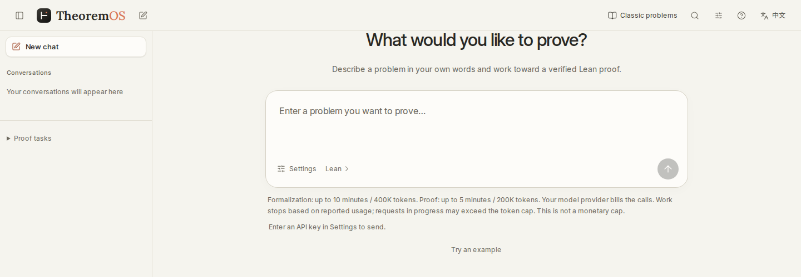
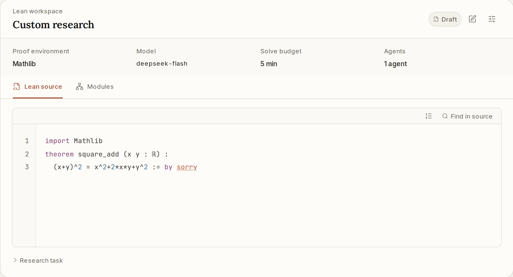

From a problemto a Lean proof
Start in natural language or TeX, review the Lean statement, and follow proof attempts through independent verification.
A browser workspace. No local Lean setup.
Free during beta. Bring your own model API key.
Follow a proof to completion
namespace Tutorialtheorem add_zero (n : Nat) : n + 0 = n := by rfltheorem zero_add (n : Nat) : 0 + n = n := by rflend TutorialLeft addition still needs a proof
add_zero closes with rfl;zero_add needs an existing lemma.
n : Nat
⊢ 0 + n = nThe next candidate uses Nat.zero_add n.
namespace Tutorialtheorem add_zero (n : Nat) : n + 0 = n := by rfltheorem zero_add (n : Nat) : 0 + n = n := by exact Nat.zero_add nend Tutorialnamespace Tutorialtheorem add_zero (n : Nat) : n + 0 = n := by rfltheorem zero_add (n : Nat) : 0 + n = n := by exact Nat.zero_add nend TutorialStart with your own problem
State the problem, check its meaning, then follow the proof. Keep the original question, candidates and Lean feedback in one workspace.
Start with your question
Write the assumptions and goal in natural language, TeX or Lean. Check that the statement says what you mean.
Follow each attempt
Read candidates, diagnostics and repairs as they happen. Set the time and token budget for your research.
Keep the whole result
Download Lean source and verification reports, or return to the record to continue an unfinished proof.


Keep the source in sight
Open the statement, proof draft and Lean diagnostics. Use the standard library or a fixed Mathlib environment to inspect each change.

Inspect the proof and its evidence
Read the source, research process and verification record together.
A bound on conjugate size
Dimitrov · Archived proof
For a nonzero algebraic integer that is not a root of unity, prove a lower bound for the largest absolute value among its algebraic conjugates (its house).
Read the statement and sourceOfficial Lean-Eval pass
Check the official resultLean proof body excerptSubmission.lean
by
exact Helpers.rpow_from_nat_power (NumberField.house α) _
(NumberField.house_nonneg α) (Helpers.argument_card_pos α)
(Helpers.house_power_lower_bound α α_int α_ne_zero α_not_rootOfUnity)View all official verification records
| Problem and original attribution | Verification and source |
|---|---|
Sunflower lemmaImproved bounds for the sunflower lemma · Combinatorics DeepScientist Math + GPT-6.1 (gpt-6.1-sol) |
|
Lorentzian polynomialsClosure of strictly Lorentzian polynomials · Algebraic combinatorics DeepScientist Math + GPT-6.1 (gpt-6.1-sol) |
|
Optimal paper Möbius bandAn aspect-ratio bound for paper Möbius bands · Geometry DeepScientist Math + GPT-6.1 (gpt-6.1-sol) |
|
Algebraic integersAn upper bound for λ_SSS · Algebraic number theory DeepScientist Math + GPT-6.1 (gpt-6.1-sol) |
|
DimitrovA lower bound for the house of algebraic integers · Number theory DeepScientist Math + GPT-6.1 (gpt-6.1-sol) |
|
Hopf–RinowGeodesic and metric completeness · Riemannian geometry DeepScientist Math + GPT-6.1 (gpt-6.1-sol) |
|
Fractional expectation thresholdsThreshold bounds for up-closed families · Probabilistic combinatorics DeepScientist Math + GPT-6.1 (gpt-6.1-sol) |
|
Equiangular linesEquiangular lines with a fixed angle · Discrete geometry DeepScientist Math + GPT-6.1 (gpt-6.1-sol) |
|
Rademacher & Enflo typeRademacher type and Enflo type coincide · Functional analysis DeepScientist Math + GPT-6.1 (gpt-6.1-sol) |
|
Unit conjectureA nontrivial unit in a group ring · Algebra DeepScientist + GPT-5.6 |
Compare proof methods
Keep the problem, environment, model and budget fixed. Compare different strategies and ways of working together.
M5 organizes collaboration. The research loop follows M3 search, M4 context, M1 construction and M2 feedback, returning to M3. S3 independently verifies the integrated proof against the complete original statement.
S3Independent verification
The integrated proof must pass Lean against the complete original statement, in the fixed environment. Local checks and model messages do not count as acceptance.
M3 → M4 · Ready tasks guide the context selection.
Choose the next task
Select ready tasks and decide whether to continue, retry or stop within route constraints and a shared budget.
- Input
- Research state · candidate operations · shared budget
- Output
- Next operation · ordered ready tasks
M3 · Search
Bring a problem to try
The workbench is in an allowlist beta. Tell us how you plan to use it; a public problem or Lean link is optional.
The platform is free during beta. Bring your own API key; your model provider bills the calls.
GitHub requests are public. Keep keys and personal contact details out of them.
- Send a request
Describe your research use on GitHub or by email.
- Confirm your email privately
After our reply, confirm the email you will use to sign in.
- Open the workbench
Once allowlisted, sign in with an email code and connect your model.
Before you start
Do I need to set up Lean?
No. The browser workbench provides the Lean standard library or a fixed Mathlib environment. No local Lean or Docker installation is needed.
What should I check after Lean passes?
Lean verifies a proof of the formal statement. You still need to check that this statement captures the assumptions and goal you intended. Meaning review and proof verification are shown separately.
Which keys work, and how are they stored?
Use OpenAI or a configured gateway. Get the key from that provider or gateway administrator. Keys can be used temporarily or saved encrypted to your account and deleted at any time. Checking a key and model only reads the model list; it does not call a model.
How do budgets work?
Defaults are 10 minutes / 400,000 tokens for formalization and 5 minutes / 200,000 tokens for proof, adjustable before starting. Runs stop on reported usage; requests in progress may exceed the limit. Token limits do not cap your bill.
Are research records saved?
Run records belong to your account, with source and report downloads. Deleting your account clears online content immediately. See privacy and terms for backup and usage identifier retention.